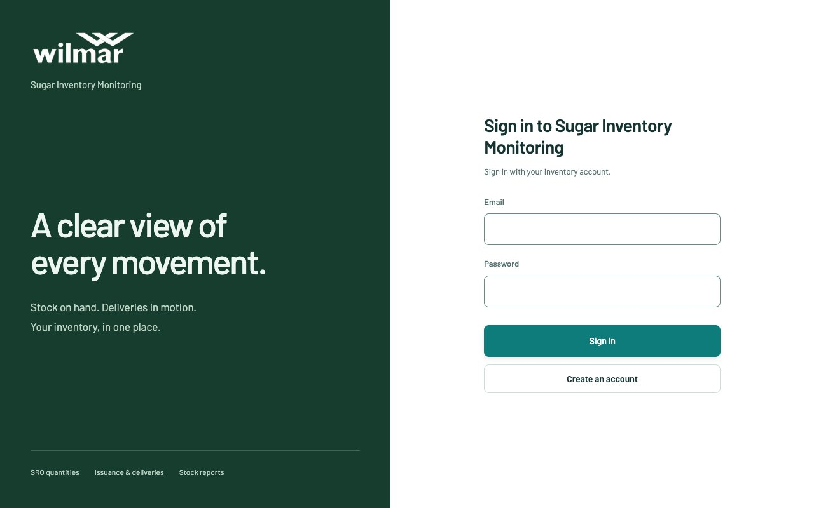

Sugar Inventory Monitoring
An account-gated portal for sugar stock, SRO quantities, issuance, deliveries, and stock reports.
- Audience
- Authorized inventory staff
- Project focus
- Stock and delivery monitoring
- Review scope
- Public sign-in screen

The problem
Inventory staff need to answer how much sugar is on hand, how much has been issued, and which deliveries affect those totals. These questions depend on being able to trace a reported quantity back to the records behind it.
The approach
The stated scope groups stock monitoring with SRO quantities, issuance, delivery records, and reporting. The public entry point is a sign-in screen for the account-gated workspace.
The challenge
An inventory interface needs to make current quantities and recorded movements easy to reconcile. For example, staff should be able to identify the source record when an issuance or delivery changes a reported total.
What the project demonstrates
- The public interface shows the sign-in entry point.
- The project scope covers quantities, stock movements, and reports as related inventory tasks.
- The screenshot documents the publicly accessible screen.
Scope & limitations
Authenticated screens and workflows were outside the review. Stock calculations, report accuracy, account permissions, and inventory changes require an authorized test account and representative records to verify.
Next steps
With an authorized test account, follow a sample issuance and delivery through to the stock report. Check whether the displayed balances reconcile with the input records.